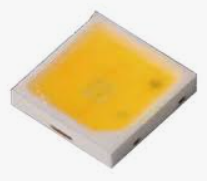
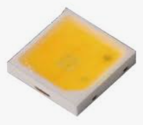

Décider une reconvertion n'est pas chose aisée. Il faut accepter de repartir à zéro alors qu'on a déjà une bonne expérience professionnelle dans son domaine. C'est cependant cette expérience qui peut permettre de se démarquer par rapport à d'autres lors d'une recherche d'emploi.
Ingénieur pendant 13 ans en recherche, développement, et méthodes industrielles, je vous propose d'apprendre à me connaître en découvrant cette page.
Mon expérience R&D dans les éclairages opératoires
Gestion de projet
Coordination d'équipes et de partenaires
Analyse de risques
Protection intellectuelle
Conception de produits
Plans d'expériences
Etude des effets biologiques et physiologiques de la lumière
Conception optique d'éclairages opératoires
Sourcing LED
 

Prototypage
Etude des effets biologiques de la lumière
Mon expérience Méthodes en aéronautique
Création de dossiers de fabrication (gammes, fiches d'instruction...)
Conception d'outillages
Mise en place de machines de production et de bancs de contrôle
Responsable optique / photométrie
Responsable gravure et découpe laser
Suivi fournisseurs en sous-traitance
Création d'outils numériques pour l'automatisation des taches

Quelques exemples d'outils réalisés sous VBA (Excel)
- Outil de gestion d'équipe (type Project)
- Simulateur optique pour anticiper l'homogénéïté lumineuse des produits en fonction du design
- Création automatique de dossiers de sous-traitance avec fusion de documents
- Création de diagrammes de Gantt pour gérer les approvisionnements et les lancements en fabrication des produits
- Outil de recherche simplifiée de documents sur le réseau
- Création de rapports automatisés sous différents formats (.xlsx ; .docx ; .txt ; .pdf)
- Formulaires d'entrées et de récupération de données